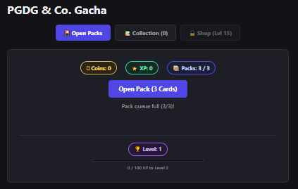
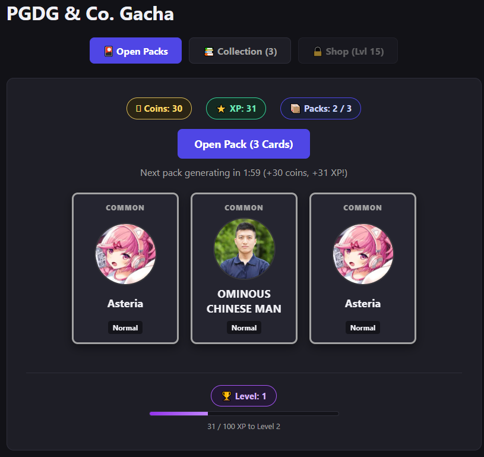
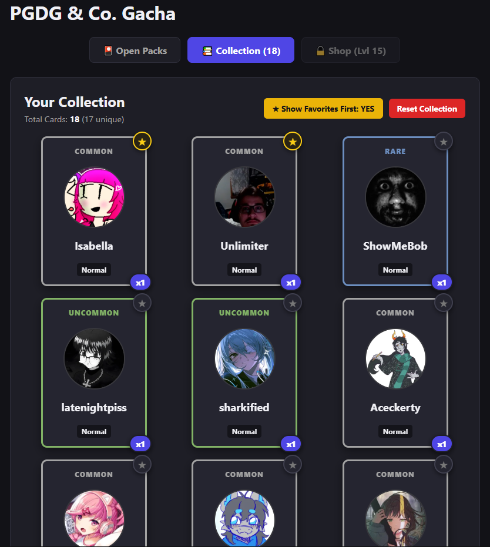
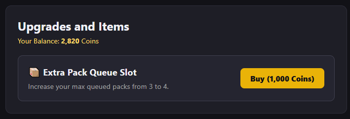
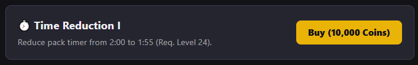
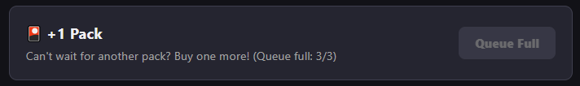

Game Information (and How To Play) (Return)
Welcome to the PGDG & Co. Gacha!
The PGDG & Co. Gacha is based on games you may have played before, (osu!gacha, extreme demon gacha, ect) Its one of those card pulling games.
This game features over 100 people from BladeGDPS, Bladecorp, 25hs, PGDG Progress, and more!
This game was created by XBladeXGMD (With assistance from Google Gemini)
How To Play
Card Pulling and Viewing your Collection
This is what the game will look like when you first start

Press the "Open Pack" button to open a pack. You can have 3 packs queued up at the same time, and each pack will give you 3 cards.

Whenever you open a pack, you will gain coins and XP for each card you get in a pack. There are 7 different types of cards you can get, each able to have 1 of 3 modifiers
Common - Gives 10 Coins
Uncommon - Gives 20 Coins
Rare - Gives 100 Coins
Epic - Gives 400 Coins
Legendary - Gives 800 Coins
Mythic - Gives 2400 Coins
Special - Gives 8192 Coins
Holographic (Holo) Cards multiply how many coins the card would have given you by 2
Foil Cards multiply how many coins the card would have given you by 4
Shiny Cards multiply how many coins the card would have given you by 8
For gaining XP, you get 80%-120% of how many coins the card is worth in XP (randomly decided)
If you want to view what cards you have or favorite a card, you can go to the "Collection Tab" by pressing the button at the top. You can also have your favorites appear first in your collection if you'd like
If for whatever reason you want to reset your collection, you can do so here as well (it will give you a confirmation message)

The Shop
Once you reach Level 15, you will unlock the Shop. You can buy different upgrades and items here.
Extra Pack Queue Slot
You can purchase extra pack slots so that way you have more packs queued up. You can get up to 7 upgrades for a total of 10 queued packs

The Cost for each upgrade is:
Slot #4 - 1000
Slot #5 - 2000
Slot #6 - 4000
Slot #7 - 8000
Slot #8 - 16000
Slot #9 - 32000
Slot #10 - 64000
Time Reduction Upgrade
The Time Reduction Upgrades are locked behind your level. You can buy 6 upgrades, each removing 5 seconds off of how long it takes to queue up another pack, for a final time of 1 minute and 30 seconds
If you are not a high enough level to buy the next upgrade, you wont be able to get it

Once you are a high enough level, you can purchase the next upgrade

The Cost of each upgrade and their required level are:
Time Reduction I - 10000 (Req. Level 24)
Time Reduction II - 15000 (Req. Level 30)
Time Reduction III - 20000 (Req. Level 36)
Time Reduction IV - 30000 (Req. Level 42)
Time Reduction V - 50000 (Req. Level 56)
Time Reduction VI - 80000 (Req. Level 78)
Extra Packs
If you are tired of waiting for packs to show up, and you have some spare cash, you can purchase an extra pack for 2000 coins

If your pack queue is full, you will be unable to purchase more packs

Four Leaf Clover(s)
You can purchase a Four Leaf Clover for 1 coin. There is no limit to how many Four Leaf Clovers you can buy. Each clover "increases your luck" by 1*10^-100%

Conclusion and Developer Note
Thats all there is to the game. Have fun and pull some cards! To go back to the game, you can click Here or click where it says (Return) at the top of the page.
If theres ever an update and you want to see what changed, you can view the changelog here or you can try to figure out what changed yourself.